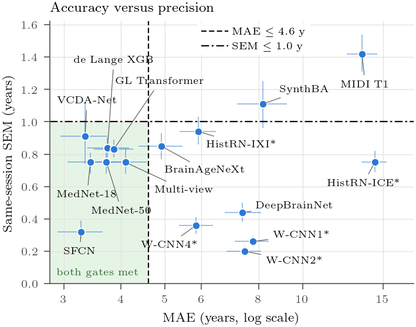
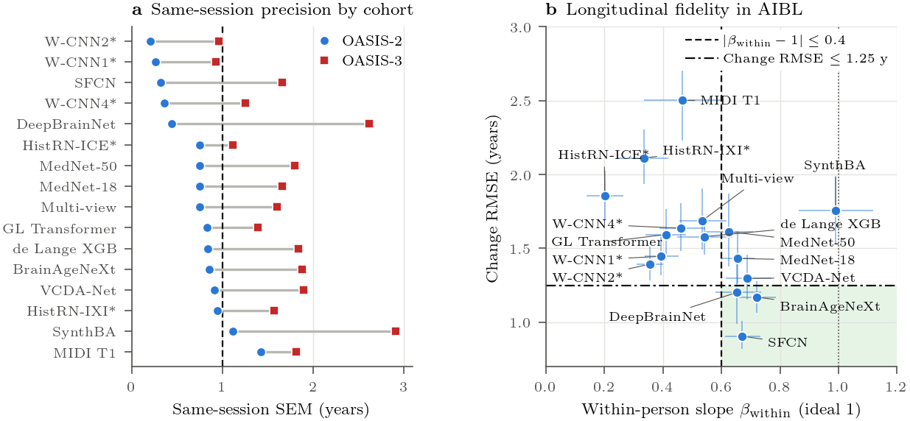
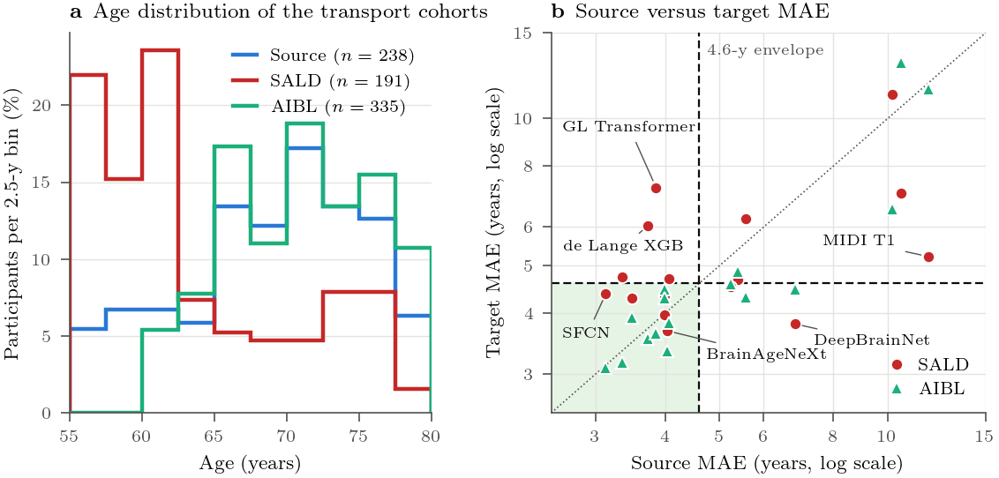
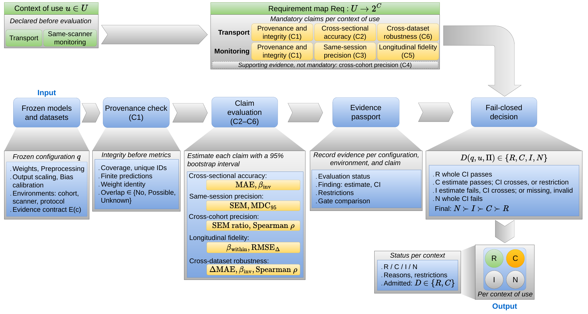
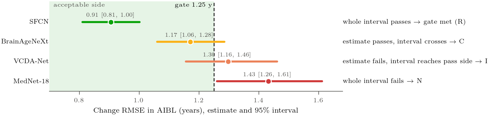
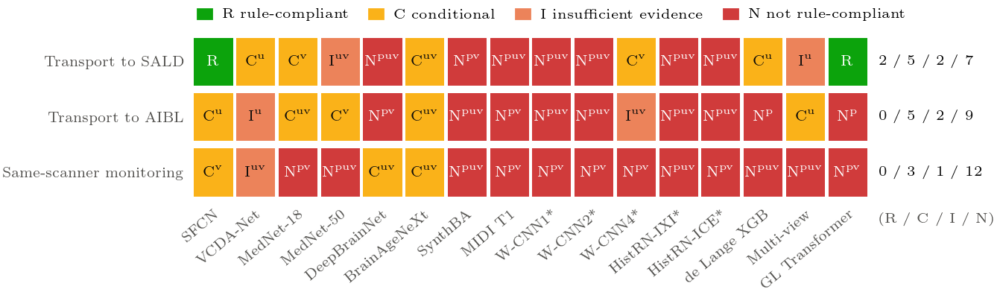
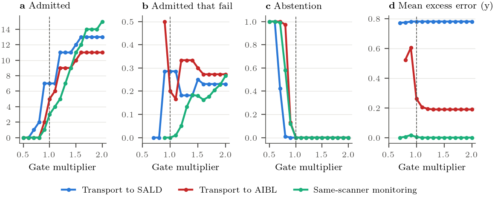

A brain-age model that is accurate on average can still be imprecise, miss within-person change, or fail in a new cohort; we turn a 16-configuration benchmark into an evidence framework that states, for each declared use, whether the evidence supports a configuration, why, and what is missing, and in a prospectively specified NACC test it admitted fewer configurations that failed than certification by MAE alone.
Abstract
Brain-age models are commonly evaluated by mean absolute error (MAE) in healthy controls, although low MAE does not establish same-session precision, longitudinal tracking, or transport to a new cohort. We developed a context-specific evidence framework from a benchmark of 16 frozen configurations. The framework maps each declared use to mandatory, non-interchangeable claims, records estimates, uncertainty, and provenance restrictions in an evidence passport, and returns rule-compliant, conditionally rule-compliant, insufficient-evidence, or not-rule-compliant status. Missing or invalid mandatory evidence cannot lead to admission. In the benchmark, MAE and same-session measurement error ranked 54 of 120 configuration pairs in opposite order, and 15 of 16 configurations showed attenuated within-person change relative to elapsed time (slope interval entirely below 1). The same configuration's status differed between transport and monitoring. In independent Parkinson's Progression Markers Initiative controls, replacing the development MAE gates with cohort-specific reference gates yielded three additional decisions that correctly admitted configurations meeting the target criterion, without admitting more that failed it; in monitoring, one admission under the 1.25-y change gate failed. In a prospectively specified test in National Alzheimer's Coordinating Center (NACC) data, attenuation replicated, and accuracy and longitudinal tracking ranked 48 of 120 configuration pairs in opposite order. Against MAE-only certification, the framework admitted fewer configurations that failed in NACC: 2 versus 6 of 16 in Siemens monitoring, and 35–38 versus 58 of 416 configuration–site transport decisions per evidence cohort. In transport, it rejected more configurations that met the criterion (62–111 versus 30 of 206). The results support context-specific conformity assessment.
Why accuracy alone is not enough
The benchmark evaluated 16 frozen configurations, from study-trained networks to released checkpoints, on six technical claims: provenance (C1), cross-sectional accuracy (C2), same-session precision (C3), cross-cohort precision (C4), longitudinal fidelity (C5), and cross-dataset robustness (C6). The claims measured different properties.



Study design: from benchmark to framework
The framework was built after the benchmark results had been inspected, so every evaluation on the benchmark data is a development analysis. Two tests used data that played no part in constructing the framework, each with its criteria and code locked before any prediction was read.
| Stage | Purpose | Data |
|---|---|---|
| Benchmark | Characterize 16 configurations on claims C1–C6 | ADNI, IXI, OASIS-1, OASIS-2, OASIS-3, AIBL, SALD |
| Construction | Requirement map, decision rule, gate rules | Benchmark results |
| Evaluation | Statuses, selection compared with MAE and BASE-style rules, gate sensitivity, calibration, simulation | Benchmark data (development) |
| Independent test | Gate values specified beforehand | PPMI healthy controls |
| Prospectively specified test | Replication of the claims; false admissions and rejections against MAE-only certification | NACC SCAN |
The evidence framework

Four properties that an accuracy ranking lacks
- Requirements per declared use. Each context of use maps to mandatory, non-interchangeable claims, so strong accuracy cannot compensate for missing precision or longitudinal evidence.
- Evidence indexed by environment and population. A result is stated for the cohort, scanner and population in which it was obtained, not assumed elsewhere.
- Provenance as a decision constraint. Possible or unknown development–evaluation overlap and substituted preprocessing lower the status and stay visible.
- An explicit insufficient-evidence outcome instead of a forced choice; missing or invalid mandatory evidence cannot lead to admission.
Interval-aware, fail-closed decisions
The final status is the most severe outcome (N ≻ I ≻ C ≻ R). The four outcomes correspond to the non-binary decision rule of conformity assessment, with the interval as the guard band; the rule is conjunctive across gates, so no multiplicity adjustment is applied. Admission depends only on the point estimates, and the interval separates R from C and I from N.

Results on the benchmark data
Context-specific statuses, with the reason for each
Transport to SALD admitted seven configurations (2 R, 5 C), transport to AIBL five (all C), and same-scanner monitoring three (SFCN, DeepBrainNet, and BrainAgeNeXt; all C). The same configuration changed status across contexts: DeepBrainNet was N for both transport contexts (source MAE 6.83 y) but C for same-scanner monitoring, whereas MedicalNet ResNet-18 was C for both transport contexts but N for monitoring (change RMSE 1.43 y). SFCN and BrainAgeNeXt were the only configurations admitted in all three contexts. Of the 13 conditional decisions, four were limited by provenance alone, four by uncertainty alone, and five by both, two situations that call for different action.

Same selection quality, more information
The framework chose the configuration chosen by MAE alone and by the BASE overall rule in all three contexts, and no paired difference in excess error between a BASE-style rule and the framework excluded zero. With the same choice, it also reports that SFCN is rule-compliant for SALD but conditional for AIBL (uncertainty) and monitoring (possible training overlap), which configurations lack sufficient evidence and why, and which ranking choices fall outside the admitted set. Selection by the lowest SEM alone chose Westman CNN2, which attenuates within-person change, and raised the held-out change error by 0.49 y.
| Rule | Chosen configuration | Share | Excess error (y) |
|---|---|---|---|
| Transport to SALD | |||
| Framework | SFCN ensemble | 91% | 0.78 [0.32, 1.35] |
| BASE overall rule | SFCN ensemble | 100% | 0.75 [0.29, 1.24] |
| Source MAE only | SFCN ensemble | 88% | 0.79 [0.31, 1.38] |
| Transport to AIBL | |||
| Framework | SFCN ensemble | 52% | 0.26 [0.00, 1.42] |
| BASE context rule | MedicalNet ResNet-18 | 40% | 0.40 [0.00, 1.15] |
| Source MAE only | SFCN ensemble | 88% | 0.04 [0.00, 0.23] |
| Same-scanner monitoring | |||
| Framework | SFCN ensemble | 99% | 0.003 [0.00, 0.00] |
| BASE context rule | BrainAgeNeXt | 57% | 0.172 [0.00, 0.42] |
| SEM only | Westman CNN2 (adapted) | 100% | 0.487 [0.36, 0.62] |
Share: of 2,000 bootstrap replicates (transport) or 200 half-sample splits (monitoring) choosing the listed configuration; intervals are 2.5th–97.5th percentiles. Selected rows of the paper's table.
What the gate values control
With a true value exactly at the threshold, R was reached in at most 5% of simulated replicates (7.5% for change error with heavy-tailed errors). Scaling all gates of a context changed which configurations were admitted but not which was selected; loosening them raised the admitted configurations that failed in the target from 2 to 5 (SALD) and 1 to 7 (AIBL), and tightening them to 0.8 times the development values left 1%, 97%, and 58% of replicates without a selection for SALD, AIBL, and monitoring.

Test of gate values in PPMI
The candidate gate set was tested in PPMI healthy controls, which no configuration had processed and no training had used. Gates anchored to a model-independent reference, the MAE of predicting every participant as the cohort's own mean age, added three admissions (two distinct configurations) that met the target criterion and no more that failed, did at least as well as the conventional gates in 1,998 of 2,000 bootstrap replicates (all 2,000 with the age-support check added), and reduced false rejections from 15 to 12. In monitoring, the prespecified hypothesis that every configuration admitted under the 1.25-y change gate passes was not supported (DeepBrainNet failed), and loosening the gate to 1.69 y added one true and two false admissions, so the 1.25-y gate was kept. The age-support check removed no admission and was not adopted.
| Context | Gate set | Admitted | False adm. | True adm. | False rej. |
|---|---|---|---|---|---|
| Transport | MAE gates 4.6 y | 20 | 2 | 18 | 15 |
| MAE gates at the cohort references | 23 | 2 | 21 | 12 | |
| Monitoring | Change gate 1.25 y | 3 | 1 | 2 | 4 |
| Change gate 1.69 y | 6 | 3 | 3 | 3 |
Prospectively specified test in NACC SCAN
The development gate set was tested without change in T1-weighted scans of the NACC SCAN program, which played no part in constructing the framework or training any study-trained or adapted configuration (participant-level independence could not be verified: NACC participants may be co-enrolled in ADNI, and no crosswalk exists); every status was fixed, and the samples, analysis, and interpretation criteria were finalized, before any SCAN prediction was computed. Both prespecified criteria for non-interchangeability were met: in the Siemens monitoring sample, 15 of 16 within-person slope intervals again lay entirely below one, and the pooled transport MAE and the monitoring change RMSE ranked 48 of 120 configuration pairs in opposite order, 12 of them settled, also under a post hoc bootstrap that drew the participants of both samples jointly. Of the seven configurations certified for monitoring by MAE alone, six had a change RMSE above that of the no-change predictor (1.60 y).
| Context | Failures | Framework | MAE alone | ||||
|---|---|---|---|---|---|---|---|
| Adm. | FA | FR | Adm. | FA | FR | ||
| Monitoring, Siemens | 15 of 16 | 3 | 2 | 0 | 7 | 6 | 0 |
| Monitoring, GE/Philips | 14 of 16 | 3 | 1 | 0 | 7 | 6 | 1 |
| Transport, AIBL evidence | 210 of 416 | 182 | 38 | 62 | 234 | 58 | 30 |
| Transport, SALD evidence | 210 of 416 | 130 | 35 | 111 | 234 | 58 | 30 |
Adm., admitted (framework) or certified (MAE alone); FA, false admissions, admitted configurations that failed; FR, false rejections, configurations not admitted that did not fail. Transport decisions are 16 configurations at 26 sites for each evidence cohort, of which 206 met the criterion; AIBL and SALD evidence apply the statuses of transport to SALD and to AIBL, respectively. The GE/Philips row applies the Siemens statuses.
The framework made fewer false admissions than certification by MAE alone in every context, at the cost of more false rejections in transport (62 and 111 against 30). As a share of admissions, false admissions were 20.9% and 26.9% under the framework against 24.8% under MAE alone, so with SALD evidence the framework removed admissions without making the remaining ones more reliable; its error balance is favourable only when a false admission costs more than 1.6 (AIBL evidence) or 3.5 (SALD evidence) times a false rejection.
Configuration manifest
Each of the 16 configurations is a frozen technical configuration: weights, preprocessing, input transforms, output, and age-bias calibration. Outputs are predicted ages in years; transport and monitoring used them raw, and brain-age-gap claims used a linear age-bias correction fitted on validation controls of the frozen subject-level development split. Adapted models ran released weights on the study's common skull-stripped affine volumes instead of their native preprocessing, which is recorded as a provenance restriction. The full manifest (CSV) also lists every checkpoint file with its SHA-256 checksum, the input shape, the origin of released weights, and the development–evaluation overlap by evaluation role.
| Configuration | Class | Members | Training data | Preprocessing | Licence |
|---|---|---|---|---|---|
| SFCN ensemble | study-trained | 3 | this study's frozen training split (ADNI, IXI, OASIS-1, ABIDE-1 controls aged 55–90) | common frozen volumes | released with the study code |
| VCDA-Net ensemble | study-trained | 3 | as SFCN ensemble | common frozen volumes | released with the study code |
| MedicalNet ResNet-18 | study-trained | 1 | MedicalNet 23-dataset segmentation pretraining, then this study's frozen training split | common frozen volumes | released with the study code |
| MedicalNet ResNet-50 | study-trained | 1 | as MedicalNet ResNet-18 | common frozen volumes | released with the study code |
| DeepBrainNet | released checkpoint | 1 | not recorded; the release states n=11,729 scans from a "highly diversified cohort" without naming any study | released slice pipeline on common volumes | none stated |
| BrainAgeNeXt | released checkpoint | 5 | not recorded | released ensemble transform on common volumes | CC BY-NC 4.0 |
| SynthBA | released checkpoint | 1 | synthetic images generated by domain randomisation from anatomical label maps; the source label maps are not recorded | released intensity/spatial transform on common volumes | MIT |
| MIDI T1 seed-60 | released checkpoint | 1 | >23,000 axial head MRI from two UK hospitals (stated for the release's T2 models; the T1 corpus is not separately described) | released post-registration transform on common volumes | CC BY-NC-ND 4.0 (unmodified copy) |
| Westman CNN1 (adapted) | released checkpoint, adapted input | 5 | not recorded; the release states >15,000 images from healthy individuals | common skull-stripped affine volumes replace rigid non-stripped inputs | MIT |
| Westman CNN2 (adapted) | released checkpoint, adapted input | 50 | as Westman CNN1 | common skull-stripped affine volumes replace rigid non-stripped inputs | MIT |
| Westman CNN4 (adapted) | released checkpoint, adapted input | 50 | as Westman CNN1 | common skull-stripped affine volumes replace rigid non-stripped inputs | MIT |
| Historical ResNet IXI (adapted) | released checkpoint, adapted input | 1 | the same Icelandic dataset with transfer learning on IXI (440 images) | common affine volumes replace CAT12-derived inputs | none stated |
| Historical ResNet ICE (adapted) | released checkpoint, adapted input | 1 | an Icelandic MRI dataset (1,264 healthy subjects), not publicly available | common affine volumes replace CAT12-derived inputs | none stated |
| de Lange XGBoost | fixed method, refitted | 1 | no released weights; the published specification refitted on this study's frozen training split | 32-region common morphometry, fitted on the frozen training split | released with the study code |
| Multi-view transformer | study implementation | 1 | this study's frozen training split (ADNI, IXI, OASIS-1, ABIDE-1 controls aged 55–90) | common frozen volumes | released with the study code |
| Global--Local Transformer | study implementation | 3 | this study's frozen training split (ADNI, IXI, OASIS-1, ABIDE-1 controls aged 55–90) | common frozen volumes, three central-slice planes | released with the study code |
Citation
The manuscript is in preparation. Until it is available, please cite:
@misc{nguyen2026beyond,
title = {Beyond Cross-Sectional Accuracy: A Benchmark-Derived Evidence
Framework for Context-Specific Conformity Assessment of
Brain-Age Models},
author = {Nguyen, Quoc-Tien and Yang, Hyung-Jeong},
year = {2026},
note = {Manuscript in preparation}
}Data sources and acknowledgments
ADNI, AIBL, OASIS-3, ABIDE-I, PPMI, and NACC SCAN data were obtained from the LONI Image and Data Archive (ida.loni.usc.edu) under approved data use applications, and the linked Uniform Data Set from NACC (naccdata.org). OASIS-1 and OASIS-2 were obtained from the OASIS website (oasis-brains.org), IXI from its project website (brain-development.org/ixi-dataset), and SALD from the International Neuroimaging Data-sharing Initiative (fcon_1000.projects.nitrc.org/indi/retro/sald.html). Participant-level data cannot be shared; this page and the paper report aggregate results only.
ADNI
* Data used in preparation of this article were obtained from the ADNI database (adni.loni.usc.edu). As such, the investigators within the ADNI contributed to the design and implementation of ADNI and/or provided data but did not participate in analysis or writing of this report. A complete listing of ADNI investigators can be found at: adni.loni.usc.edu/wp-content/uploads/how_to_apply/ADNI_Acknowledgement_List.pdf.
Data used in the preparation of this article were obtained from the Alzheimer's Disease Neuroimaging Initiative (ADNI) database (adni.loni.usc.edu). The ADNI was launched in 2003 as a public-private partnership, led by Principal Investigator Michael W. Weiner, MD. The primary goal of ADNI has been to test whether serial magnetic resonance imaging (MRI), positron emission tomography (PET), other biological markers, and clinical and neuropsychological assessment can be combined to measure the progression of mild cognitive impairment (MCI) and early Alzheimer's disease (AD).
ADNI funding
Data collection and sharing for the Alzheimer's Disease Neuroimaging Initiative (ADNI) is funded by the National Institute on Aging (National Institutes of Health Grant U19 AG024904). The grantee organization is the Northern California Institute for Research and Education. In the past, ADNI has also received funding from the National Institute of Biomedical Imaging and Bioengineering, the Canadian Institutes of Health Research, and private sector contributions through the Foundation for the National Institutes of Health (FNIH) including generous contributions from the following: AbbVie, Alzheimer's Association; Alzheimer's Drug Discovery Foundation; Araclon Biotech; BioClinica, Inc.; Biogen; Bristol-Myers Squibb Company; CereSpir, Inc.; Cogstate; Eisai Inc.; Elan Pharmaceuticals, Inc.; Eli Lilly and Company; EuroImmun; F. Hoffmann-La Roche Ltd and its affiliated company Genentech, Inc.; Fujirebio; GE Healthcare; IXICO Ltd.; Janssen Alzheimer Immunotherapy Research & Development, LLC.; Johnson & Johnson Pharmaceutical Research & Development LLC.; Lumosity; Lundbeck; Merck & Co., Inc.; Meso Scale Diagnostics, LLC.; NeuroRx Research; Neurotrack Technologies; Novartis Pharmaceuticals Corporation; Pfizer Inc.; Piramal Imaging; Servier; Takeda Pharmaceutical Company; and Transition Therapeutics.
AIBL
AIBL is funded by the Commonwealth Scientific and Industrial Research Organisation, the National Health and Medical Research Council, and participating institutions; its researchers (aibl.org.au) contributed data but not analysis or writing.
OASIS
Data were provided in part by OASIS: Cross-Sectional and Longitudinal (Principal Investigators D. Marcus, R. Buckner, J. Csernansky, and J. Morris; P50 AG05681, P01 AG03991, P01 AG026276, R01 AG021910, P20 MH071616, and U24 RR021382) and OASIS-3: Longitudinal Multimodal Neuroimaging (Principal Investigators T. Benzinger, D. Marcus, and J. Morris; P30 AG066444, P50 AG00561, P30 NS09857781, P01 AG026276, P01 AG003991, R01 AG043434, UL1 TR000448, and R01 EB009352).
PPMI
Data used in the preparation of this article was obtained on 2026-09-13 from the Parkinson's Progression Markers Initiative (PPMI) database (www.ppmi-info.org/access-data-specimens/download-data), RRID:SCR_006431. For up-to-date information on the study, visit www.ppmi-info.org.
PPMI funding
PPMI – a public-private partnership – is funded by the Michael J. Fox Foundation for Parkinson's Research and funding partners, including AbbVie, Alamar Biosciences, Aligning Science Across Parkinson's (ASAP), Arrowhead Pharma, Arvinas, AskBio, BIAL, BioArctic, Biohaven, BlueRock Therapeutics, Bristol Myers Squibb, Calico Labs, Capsida Biotherapeutics, Critical Path Institute, DaCapo Brainscience, Denali, Edmond J. Safra Foundation, Eli Lilly, Gain Therapeutics, GE Healthcare, Genentech, GSK, Insitro, Johnson & Johnson Innovative Medicine, Lundbeck, Merck, Neumora, Neuron23, Novartis, Olink, Regeneron, Roche, Sanofi, Tenvie, UCB, Vanqua Bio, Voyager Therapeutics, and The Weston Family Foundation.
NACC SCAN
The NACC database is funded by NIA/NIH Grant U24 AG072122. SCAN is a multi-institutional project that was funded as a U24 grant (AG067418) by the National Institute on Aging in May 2020. Data collected by SCAN and shared by NACC are contributed by the NIA-funded ADRCs as follows: Arizona Alzheimer's Center - P30 AG072980 (PI: Eric Reiman, MD); R01 AG069453 (PI: Eric Reiman (contact), MD); P30 AG019610 (PI: Eric Reiman, MD); and the State of Arizona which provided additional funding supporting our center; Boston University - P30 AG013846 (PI Neil Kowall MD); Cleveland ADRC - P30 AG062428 (James Leverenz, MD); Cleveland Clinic, Las Vegas – P20AG068053; Columbia - P50 AG008702 (PI Scott Small MD); Duke/UNC ADRC – P30 AG072958; Emory University - P30AG066511 (PI Levey Allan, MD, PhD); Indiana University - R01 AG19771 (PI Andrew Saykin, PsyD); P30 AG10133 (PI Andrew Saykin, PsyD); P30 AG072976 (PI Andrew Saykin, PsyD); R01 AG061788 (PI Shannon Risacher, PhD); R01 AG053993 (PI Yu-Chien Wu, MD, PhD); U01 AG057195 (PI Liana Apostolova, MD); U19 AG063911 (PI Bradley Boeve, MD); and the Indiana University Department of Radiology and Imaging Sciences; Johns Hopkins - P30 AG066507 (PI Marilyn Albert, Phd.); Mayo Clinic - P50 AG016574 (PI Ronald Petersen MD PhD); Mount Sinai - P30 AG066514 (PI Mary Sano, PhD); R01 AG054110 (PI Trey Hedden, PhD); R01 AG053509 (PI Trey Hedden, PhD); New York University - P30AG066512-01S2 (PI Thomas Wisniewski, MD); R01AG056031 (PI Ricardo Osorio, MD); R01AG056531 (PIs Ricardo Osorio, MD; Girardin Jean-Louis, PhD); Northwestern University - P30 AG013854 (PI Robert Vassar PhD); R01 AG045571 (PI Emily Rogalski, PhD); R56 AG045571, (PI Emily Rogalski, PhD); R01 AG067781, (PI Emily Rogalski, PhD); U19 AG073153, (PI Emily Rogalski, PhD); R01 DC008552, (M.-Marsel Mesulam, MD); R01 AG077444, (PIs M.-Marsel Mesulam, MD, Emily Rogalski, PhD); R01 NS075075 (PI Emily Rogalski, PhD); R01 AG056258 (PI Emily Rogalski, PhD); Oregon Health and Science University - P30 AG066518 (PIs Lisa Silbert, MD, Kevin Duff, PhD); R56 AG074321 (PI Jeffrey Kaye, MD); Rush University - P30 AG010161 (PI David Bennett MD); Stanford – P30AG066515; P50 AG047366 (PI Victor Henderson MD MS); University of Alabama, Birmingham – P20; University of California, Davis - P30 AG10129 (PI Charles DeCarli, MD); P30 AG072972 (PI Charles DeCarli, MD); University of California, Irvine - P50 AG016573 (PI Frank LaFerla PhD); University of California, San Diego - P30AG062429 (PI James Brewer, MD, PhD); University of California, San Francisco - P30 AG062422 (Rabinovici, Gil D., MD); University of Kansas - P30 AG035982 (Russell Swerdlow, MD); University of Kentucky - P30 AG028283-15S1 (PIs Linda Van Eldik, PhD and Brian Gold, PhD); University of Michigan ADRC - P30AG053760 (PI Henry Paulson, MD, PhD) P30AG072931 (PI Henry Paulson, MD, PhD) Cure Alzheimer's Fund 200775 - (PI Henry Paulson, MD, PhD) U19 NS120384 (PI Charles DeCarli, MD, University of Michigan Site PI Henry Paulson, MD, PhD) R01 AG068338 (MPI Bruno Giordani, PhD, Carol Persad, PhD, Yi Murphey, PhD) S10OD026738-01 (PI Douglas Noll, PhD) R01 AG058724 (PI Benjamin Hampstead, PhD) R35 AG072262 (PI Benjamin Hampstead, PhD) W81XWH2110743 (PI Benjamin Hampstead, PhD) R01 AG073235 (PI Nancy Chiaravalloti, University of Michigan Site PI Benjamin Hampstead, PhD) 1I01RX001534 (PI Benjamin Hampstead, PhD) IRX001381 (PI Benjamin Hampstead, PhD); University of New Mexico - P20 AG068077 (Gary Rosenberg, MD); University of Pennsylvania - State of PA project 2019NF4100087335 (PI David Wolk, MD); Rooney Family Research Fund (PI David Wolk, MD); R01 AG055005 (PI David Wolk, MD); University of Pittsburgh - P50 AG005133 (PI Oscar Lopez MD); University of Southern California - P50 AG005142 (PI Helena Chui MD); University of Washington - P50 AG005136 (PI Thomas Grabowski MD); University of Wisconsin - P50 AG033514 (PI Sanjay Asthana MD FRCP); Vanderbilt University – P20 AG068082; Wake Forest - P30AG072947 (PI Suzanne Craft, PhD); Washington University, St. Louis - P01 AG03991 (PI John Morris MD); P01 AG026276 (PI John Morris MD); P20 MH071616 (PI Dan Marcus); P30 AG066444 (PI John Morris MD); P30 NS098577 (PI Dan Marcus); R01 AG021910 (PI Randy Buckner); R01 AG043434 (PI Catherine Roe); R01 EB009352 (PI Dan Marcus); UL1 TR000448 (PI Brad Evanoff); U24 RR021382 (PI Bruce Rosen); Avid Radiopharmaceuticals / Eli Lilly; Yale - P50 AG047270 (PI Stephen Strittmatter MD PhD); R01AG052560 (MPI: Christopher van Dyck, MD; Richard Carson, PhD); R01AG062276 (PI: Christopher van Dyck, MD); Florida - P30AG066506-03 (PI Glenn Smith, PhD); P50 AG047266 (PI Todd Golde MD PhD).
IXI, SALD, and ABIDE-I
We thank the IXI project, the Southwest University Adult Lifespan Dataset (SALD) and the International Neuroimaging Data-sharing Initiative, and the Autism Brain Imaging Data Exchange (ABIDE-I) for making their data openly available.